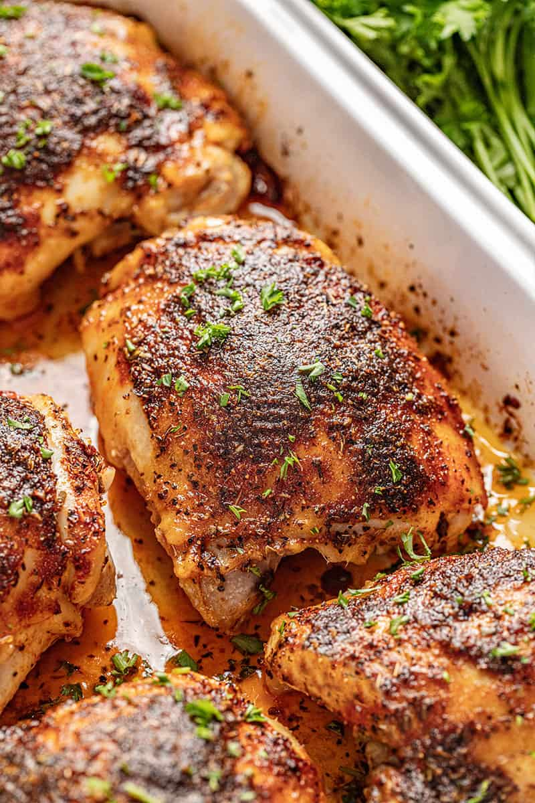

Chicken Thighs

Description:
Use a lot of aromatics and veggies, and serve this with a simple starch such as mashed or roasted potatoes, polenta, or rice. Or keep it simple and serve with a starch and salad.
Ingredients
- chicken thighs
- spices
- salt
- optional: aromatics, citrus
Steps
- Preheat oven to 400F.
- Cut aromatics in large (about 1 in.) pieces, scatter across the bottom of a pyrex dish or sheet pan.
- Pat dry chicken thighs, arrange in pyrex/sheet pan, on top of chopped aromatics, skin side down.
- Sprinkle chicken with salt and spices, flip to skin side up, repeat.
- Bake. Chicken is done when juices run clear and meat is pulling slightly from the bone.
- Optional sauce: Place cooked thighs in a serving dish, reserve. Pour drippings and aromatics into a saucepan. Add some liquid into the pyrex/sheet pan and scrape up as much as you can (if using a sheet pan, you can put it directly on the cooktop and heat it), add that liquid into the saucepan. Add wine if desired, reduce sauce until the consistency of half and half, thicken slightly with cornstarch slurry. Turn off heat, swirl in cold butter, season to taste. Pour around chicken thighs being careful to preserve the crispy skin.
Notes
- Aromatics: onions, celery, carrots, peppers, whole spices.
- Whole spices: peppercorn, bay leaf (break into smaller pieces), whole dried peppers, cinnamon sticks, star anise, cardamom, coriander seed, mustard seed.
- Spices such as coriander seed and cardamom need to be toasted in a dry pan first.
- Cornstarch slurry: In a small bowl, moisten about a tablespoon of cornstarch with two tablespoons of COLD water. Stir. Add slowly to whatever you are trying to thicken; it will thicken when the liquid reaches boiling temperature.